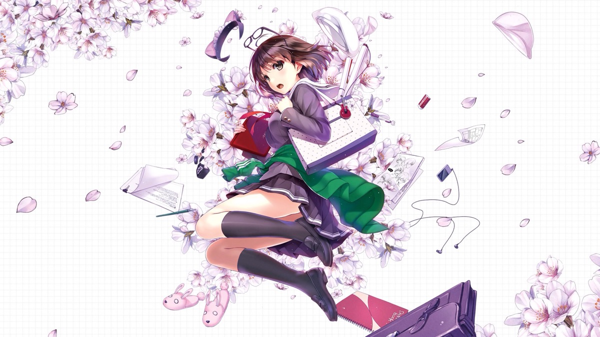

加藤惠--《不起眼女主角培育法》
身份背景
安艺伦也的同班同学。平凡没有存在感的女孩，但认真去看是个美少女。
受伦也的请求担任同人游戏“cherry blessing”的女主角，是同人游戏社团“blessing software”除了伦也之外的第一个成员。
在社团“blessing software”中担任吐槽役和脚本见习，在“cherry blessing”中扮演双女主叶巡璃和丙瑠璃。
相貌衣着
仔细观察之下，五官脸孔端正，个子不矮不高，皮肤也算细致，该凸的地方凸，该凹的地方也挺凹的，是很可爱的类型。
动画形象
初登场戴一顶白色贝雷帽，在坡道上被风吹跑被伦也捡到，这也成为二人的初次邂逅。
起初留着短发，于第三卷突然扎起短马尾，后来留长头发并束成普通马尾，于第五卷终章被诗羽要求松开头发成为黑长直，第六卷也一直保持散发，第七卷末尾为了鼓励伦也，重新成为他的女主角剪回波波头。
很会打扮，经常更换不同的衣服。
与伦也约会时，也会有戴着水手帽，穿漂亮的上衣和迷你裙的潮气打扮。
参加夏季漫展时则穿着泡泡袖的白衬衫和喇叭裙，围着绿色领巾。
性格特点
存在感薄弱。名字和成绩普通，没有加入社团，也没当过班级委员，朋友不是很多但也没有勇气认识更多朋友，是容易一下子被无视的类型。
在被发现就是当时捡帽子的女生之前，明明同班一个月以上，却没给伦也留下任何印象。
冷静、理性、和气、亲切，相处起来会非常安心。
非常好说话，永远是一副心平气和的样子，面对伦也的自说自话也会认真去听。
和她亲切交谈之后，内心的愧疚感就能消失无踪了。
性格随和到与女生不常交往的人都能畅所欲言。
总是尽职尽责地关心和顾虑周围的人。
平时感情起伏很小，大部分时间是面无表情的状态，但在某些瞬间会有微小变化。在修罗场时间仍然会闲闲地把玩智能手机，被称为“惠模式”。虽然情绪变化很小，但被说存在感低时同样会落寞和难过
，面对伦也并不漂亮的话语也会带有责备之意和不耐烦的心情。感情只是适当表达，在人心中不留纠葛。
在伦也的培养之下角色属性变得鲜明起来，在新社团中很有震慑力。